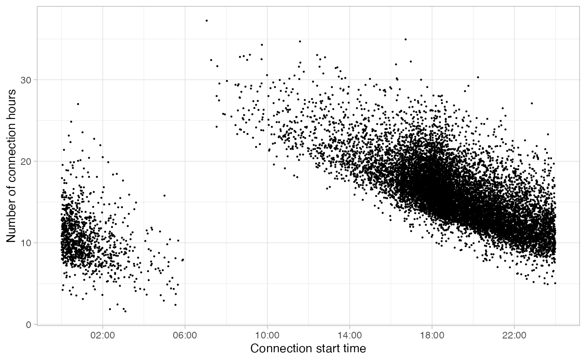

As explained, the clustering method used in package
evprof is Gaussian Mixture Models clustering. This method
is sensible to outliers since it tries to explain as most as possible
all the variance of the data, which results to wide and non-specific
Gaussian distributions (clusters). Therefore evprof
package provides different functions to detect and filter outliers. At
the same time, it is also recommended to perform the clustering process
in a logarithmic scale, to include negative values to originally
positive variables. The logarithmic transformation can be done in most
of functions, setting the log argument to
TRUE.
Here we have a set of sessions of example,
noisy_set:
plot_points(noisy_set, size = 0.2, log = T)
Cutting sessions
If we see a part of the graph that consists clearly of outlying
points, then we can cut directly the sessions below or above this
specific limit using the function cut_sessions(). This
function lets to configure the Connection Duration limits
(connection_hours_min and
connection_hours_max) and the Connection Start limits
(connection_start_min and
connection_start_max). If we want to make the division in
logarithmic scale it is important to set the argument
log = TRUE.
noisy_set <- noisy_set %>%
cut_sessions(connection_hours_min = 1.5, connection_start_min = 2.5, log = T)
plot_points(noisy_set, size = 0.2, log = T)
Noise cleaning with DBSCAN clustering
The DBSCAN (Density-based spatial clustering of
applications with noise) clustering method is widely used for dividing
data sets according to density zones. In this case, this method has been
used to detect the outliers, i.e the data points outside of the main
density zones. Package evprof proposes the function
detect_outliers with the purpose of classify a certain
noise threshold of noise. The main arguments of this function
are MinPts, eps (DBSCAN parameters) and
noise_th (noise threshold, in %).
The plot area of sessions detected under this noise threshold depends
highly on the MinPts values. Our recommendation is to
compare different values of MinPts and
noise_th with the corresponding plots obtained with
function plot_outliers. Following you can find a possible
code for this iteration (using purrr::pmap function):
.MinPts <- c(10, 50, 100, 200)
.noise_th <- c(1, 3, 5, 7)
dbscan_params <- tibble(
MinPts = rep(.MinPts, each = length(.noise_th)),
noise_th = rep(.noise_th, times = length(.MinPts))
)
plots_list <- pmap(
dbscan_params,
~ noisy_set %>%
detect_outliers(MinPts = ..1, noise_th = ..2, log = T) %>%
plot_outliers(log = T, size = 0.2) +
theme(legend.position = "none")
)You can save the plots in a pdf for a proper visualization, using
cowplot::plot_grid function.
ggsave(
filename = 'my_noise_detection.pdf',
plot = cowplot::plot_grid(
plotlist = plots_list, nrow = 4, ncol = 4, labels = as.list(rep(.MinPts, each = length(.noise_th)))
),
width = 500, height = 250, units = "mm"
)From all these plots, we see that the the higher the
MinPts is, the more center-focused is the final clean
cluster. This is not a valid approach for all data sets, so the value of
MinPts must be defined properly in every case. In this
case, we decide that a good compromise solution is a value of
MinPts of 200 and a noise threshold of
5%:
plots_list[[15]]